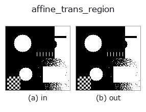

geometry op• Data kinds: region → region
• Call: fullseye.apply(img, "affine_trans_region", a=0.5, b=0.5) (the 2-D model is one image plus two scalar knobs a,b∈[0,1])
• HALCON equivalent: affine_trans_region (the HALCON reference is a useful guide to its meaning and parameters)

*The figure is the actual output on a synthetic 128×128 input. Left: input, right: output. Point clouds are drawn as a top-down scatter (brightness = z), 1-D series as a line plot, volumes as the maximum-intensity projection along z, videos as the middle frame, complex images as magnitude; return values that are not pictures are shown as the values themselves.*
Sweeping knob a (0.1 / 0.5 / 0.9, the other knob at its default):
▸ affine_trans_region: knob a sweep (docs site)
Sweeping knob b (0.1 / 0.5 / 0.9, the other knob at its default):
▸ affine_trans_region: knob b sweep (docs site)
Stages (the ops that come before → this op, left to right):
▸ affine_trans_region: stages (docs site)
On other images (synthetic scene / photo / coins. Top row: inputs, bottom row: their outputs. Knobs at default):
▸ affine_trans_region: other inputs (docs site)
Applies an affine transform (rotation + shear) to a region. Transforms it as a continuous value using the same `affine branch of _sh_geom as affine_trans_image, then re-binarizes it at 0.5 via _rebinarise` and returns it as a {0,1} region (to remove intermediate values produced by geometric-transform interpolation). a sets the rotation angle (-20 to +20 degrees), and b sets the shear amount.
> The detailed description below is the original text — the summary and the headings are translated.
HALCON の `affine_trans_region`（領域に任意のアフィン 2D 変換を適用する演算）に相当する近似。
• gallery2d_geometry family guide
• Sample-data catalog (download URLs / licences) — 2-D uses skimage.data (BSD/public domain) plus synthetic images; 3-D lists download URLs for real data sources (Stanford, PDS, …).
• Operator provenance and references — the sources of the research/methods this op family came from.
• The canonical algorithm (author, year) and its uses are named in the family usage guide above.
The program below has been verified to run (same input as the figure). In Studio's help this block becomes buttons that load and run it on the spot.
threshold 0.50 0.50 affine_trans_region 0.50 0.50
▸ Load this pipeline · Load & run
• gallery2d_geometry — py -3.11 examples/gallery2d_geometry.py
region as input)identity · reg_erode · reg_dilate · reg_open · reg_close · fill_holes · select_largest · remove_small
geometry)rotate_img · rescale_img · affine_warp · sk_swirl · mirror_image · transpose_region · rotate_image · zoom_image_factor
*Provenance: ops.py — 2D operator registry. This per-op note is generated by tools/opdocs.py md (do not hand-edit).*
© 2026 Kazufumi Furuse — Fullseye operator documentation. Licensed under Apache-2.0.
{kind=link}
{kind=link}
{kind=link}
{kind=link}